MLC Life
API's & Integration 101
Overview
Audience
Anyone in MLC Technology
Time
45 minutes + Questions
Goals for this presentation
- Why API's & Integration?
- Platform responsibilities for API's & Integration
- Where to find more information
Content
- Background
- 'The API Economy'
- API Characteristics
- Identifying API opportunities
- API's & the Platform model
- Next steps, Q & A
MLC Vision & Principles
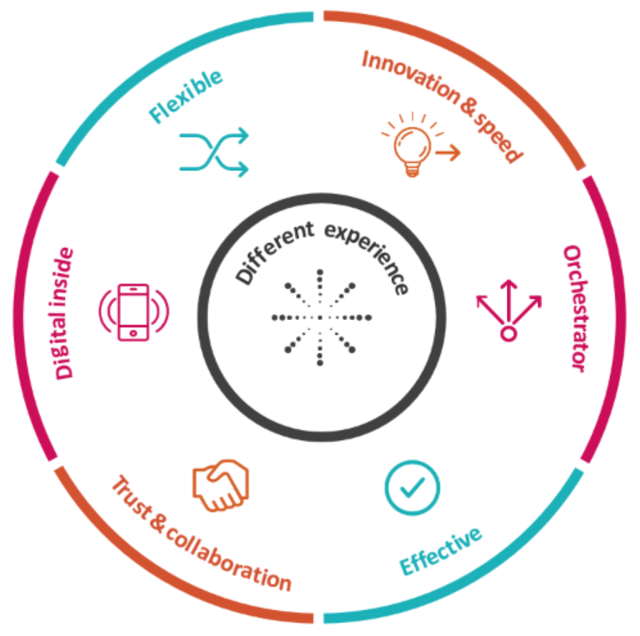Connectivity explosion
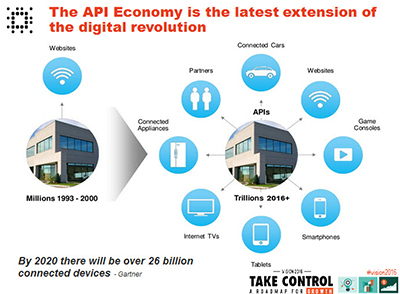Integration v1.0
- Enterprise Service Bus
- SOA + Web Services
- Enterprise Integration patterns
Integration v2.0
- Internet of Things
- Mobiles, Digital channels
- Platform / Software as a service
- API's
- Containerisation
Public API Growth
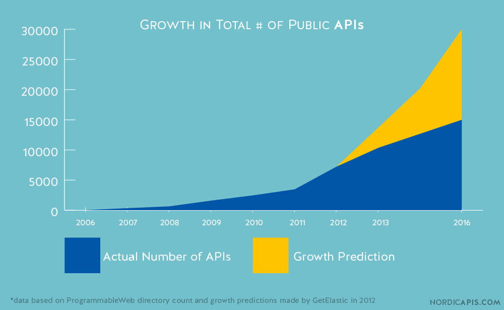Public API Directories
http://www.programmableweb.com/apis/directory16,000+ API's
API Product Revenue
50% |
|
 |
60% |
| 90% |
What is an API?
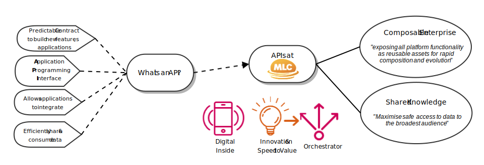A platform view
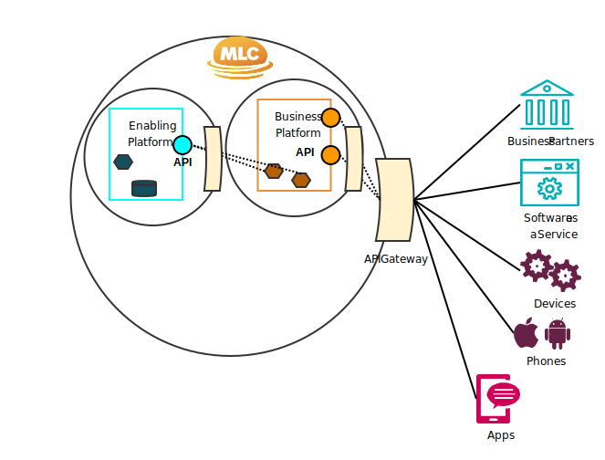API Principles
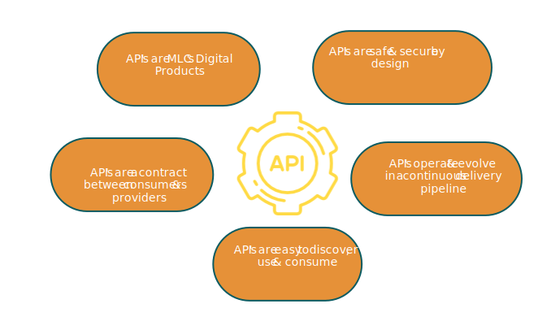API Characteristics
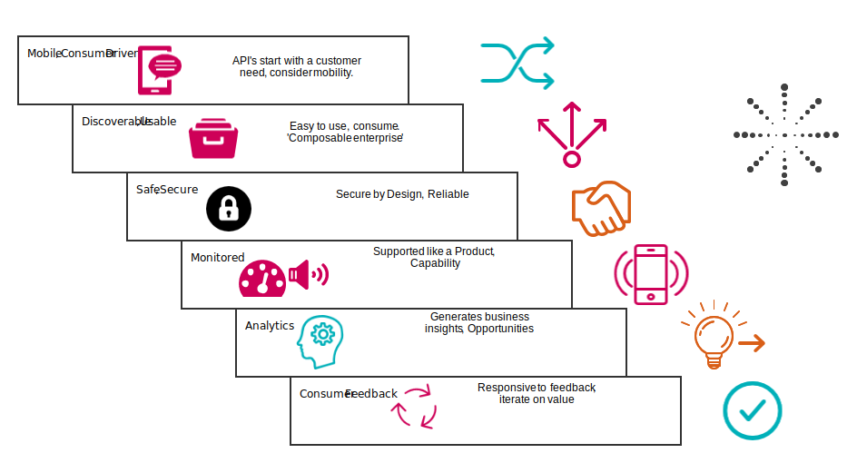Mobile & Consumer Driven
 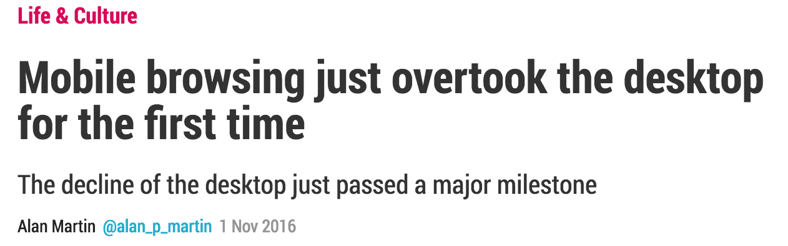
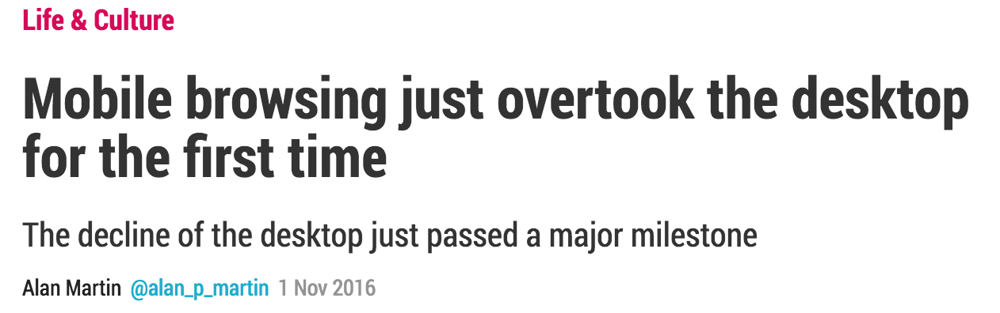
Discoverable & Usable
Types of API's
| 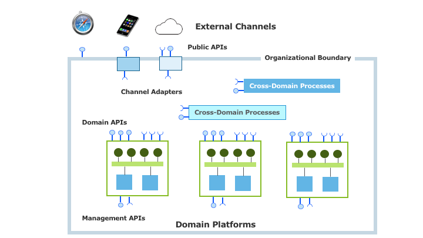 |
|
Discovery via API Portal
Usable
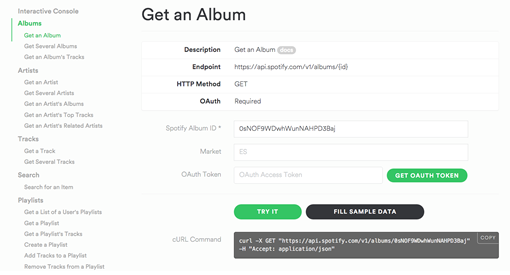Self-Serve
- Developer Friendly
- Client code, SDK's
- Stubbing, Testing
- Samples, documentation
- ...
Safe, Secure
Safe
- Customer, Partners - Privacy, APRA
- Consumers - Reliability, Availability
Secure
- MLC Security principles
- Authentication, Authorisation
- Least privelege
- Threat Model
- Secure Data in motion & at rest
Monitored
- Digital Product
- Known Quality of service
- Logs, Auditing
- Health
- Pro-active vs. Re-active
Analytics
- Organisational 'Heartbeat'
- Product research - answer questions
- Novelty - unexpected usage
Consumer Feedback
- Speed to value
- Experiment driven
- Iterative
- Developer feedback and engagement
Identifying API Opportunities
So What changes?
Integration team services
- Consultation, Coaching, Advice
- API Gateway, Integration platform
- API Workshops & Training
- API Design guidelines, patterns, templates
- API Portal
- API Roadshows
- Community of practice
Questions?
Feedback is welcome essential.
Integration Space